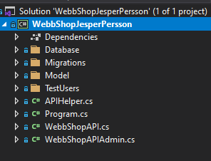
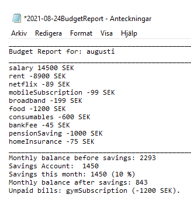
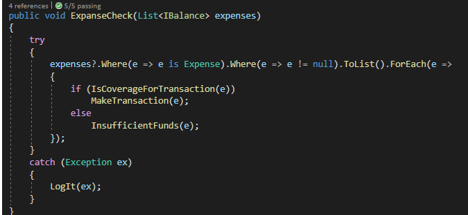
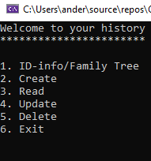
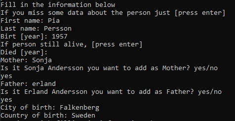
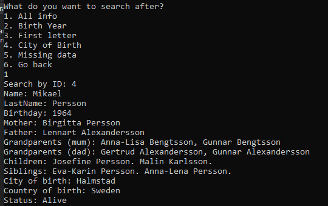

This project was an asignment during the .Net-developer studies. The aim for the task was to create an application that could be used as an online book shop. The application was built with the design pattern MVC.
Further on I had to develop and integrate the backend logic that runs all the communication with the database. In this specific project SQL Server was used. For more detailed information, please check out my repo at github.
The household Economy project was my first team project. Together we created a basic application that was supposed to help you calculcate on your monthly incomes and outcomes. Great tool to use if you want to set up how much you can possible save every month. By this project I´ve learned a great deal about my self and what kind of enviroment that maximise my work. We created the architect together and then splitted up the work. I was responisble for the report and writing the code for calculations. Down listed pictures are print screens where the first one shows a report that generates by the application and the second one is print screen from the code base that I´ve built.
an example of what a report could look like
Inspired by clean code, most of the code is extracted to own methods
Doodle Jump is a popular and classic game. This one is written in javascript and styled with css.
A print screen of what the game looks like.

When the game is over, the score displays.
The family tree is an application that integrates with a database. The user interface is kind of simple and is printed in a console window. However the strucute of the code and how certain methods are reused is what drilled me in this assignment.
This is what´s presented to the user when open the application. As you can see it´s based on CRUD principles which are the four basic operations of persistent storage. CRUD is also sometimes used to describe user interface conventions that facilitate viewing, searching, and changing information using computer-based forms and reports.
What´s the app displays when creating a new person
And if you want to find out information about your relative
Click on the picture to read more about the project